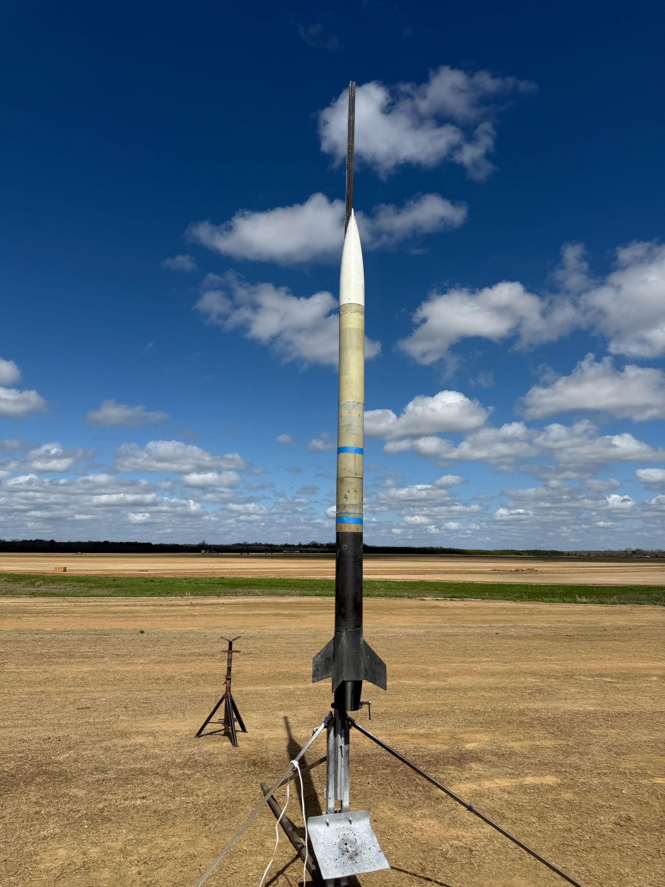

Full vehicle integration of the 2025-2026 CURE competition rocket "CU Up There"

Successful design, fabrication, and launch of Clemson University Rocket Engineering's (CURE) subsonic competition rocket, "CU Up There". Contributed to structural design, recovery system layout, composite manufacturing, and technical documentation. Selected as one of 14 members to attend IREC for integration and field operations.
Design and build a structurally sound, competition-ready rocket meeting constraints for altitude, stability, recovery reliability, and manufacturability under a reduced recovery bay length.
Structures: Designed airframe components and internal spar system using Onshape; produced
manufacturing-ready drawings with GD&T and third-angle projection
Recovery: Drafted layout concepts for a constrained 6" recovery bay; created section-view diagrams to
communicate subsystem interfaces
Composite Manufacturing: Fabricated carbon-fiber and fiberglass airframes, couplers, and motor tubes; supported
sanding, trimming, and assembly during major build cycles.
Technical Documentation: Generated internal cutaways and subsystem diagrams for technical report; rewrote
sections to integrate new visuals.
IREC Integration: Performed integration procedures, pre-flight checks, and electronics setup (Aeronix GPS and telemetry)
during launch week.
- Completed full system integration across six sub teams
- Achieved stable flight and full recovery at competition with only minor damages
- Engineering drawings and diagrams incorporated into the team's technical report
- Gained field-operations experience through IREC participation
Onshape • OpenRocket • Machine Tools • 3D Printing • Dremel • Aeronix GPS
Carbon Fiber • Fiberglass • Epoxy • Aluminum Hardware
Full vehicle integration of the 2025-2026 CURE competition rocket "CU Up There"